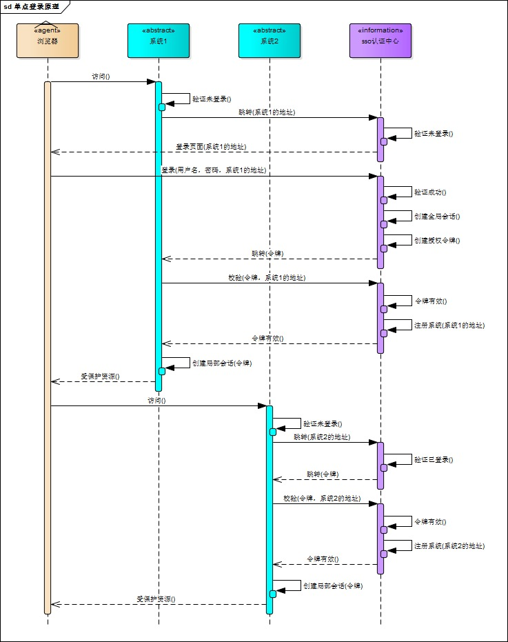

上一篇说了简单的分布式session的解决思路。
同时想到了可以用类似的方法解决单点登录的问题。
简单记录一下。
单点登录全称Single Sign On（以下简称SSO）。
单点需要一个独立的认证中心，只有认证中心能接受用户的用户名密码等安全信息，其他系统不提供登录入口，只接受认证中心的间接授权。间接授权通过令牌实现，sso认证中心验证用户的用户名密码没问题，创建授权令牌，在接下来的跳转过程中，授权令牌作为参数发送给各个子系统，子系统拿到令牌，即得到了授权，可以借此创建局部会话，局部会话登录方式与单系统的登录方式相同。这个过程，也就是单点登录的原理。
登录和认证过程看下面的盗图：

下面演示下sso服务器核心代码实现。
登录代码：1
2
3
4
5
6
7
8
9
10
11
12
13
14
15
16
17
18
19
20
21
22
23
24@RequestMapping(value = "/login", method = RequestMethod.POST)
public Object login(HttpServletRequest request, HttpServletResponse response, ModelMap modelMap) {
String username = request.getParameter("username");
String password = request.getParameter("password");
String sessionId = request.getSession().getId().toString();
// 判断是否已登录，如果已登录，则回跳，防止重复登录
String hasCode = RedisUtil.get("login_session_" + sessionId);
// code校验值
if (StringUtils.isBlank(hasCode)) {
// 认证用户名密码: 代码略, 如果认证不过，这里直接返回失败.
// 验证帐号密码正确，创建code
String code = UUID.randomUUID().toString();
// 全局会话的code, 保存到redis, 带有效时间参数
RedisUtil.set("login_session_" + sessionId, code, 600);
// code校验值
RedisUtil.set("login_code_" + code, code, 600);
}
// 回跳登录前地址
String backurl = request.getParameter("backurl");
backurl += "?code=" + code + "&username=" + username;//需要把生成的code传过去, 下次认证都使用这个code
return "redirect:" + backurl;
}
验证：1
2
3
4
5
6
7
8
9
10
11
12
13
14@RequestMapping(value = "/code", method = RequestMethod.POST)
@ResponseBody
public Object code(HttpServletRequest request) {
String codeParam = request.getParameter("code");
String code = RedisUtil.get("login_code_" + codeParam);
if (StringUtils.isBlank(codeParam) || !codeParam.equals(code)) {
return "无效code";
}
// 刷新redis
String sessionId = request.getSession().getId().toString();
RedisUtil.set("login_session_" + sessionId, code, 600);
RedisUtil.set("login_code_" + code, code, 600);
return "SUCCESS";
}